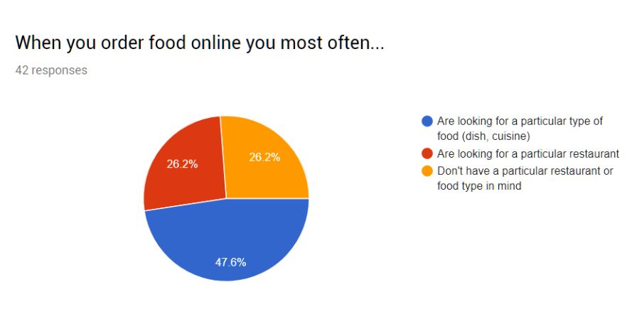
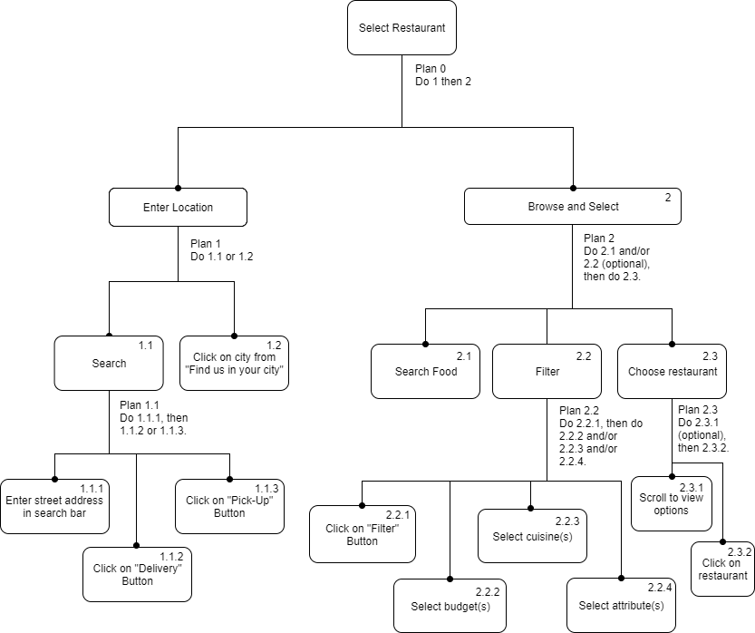
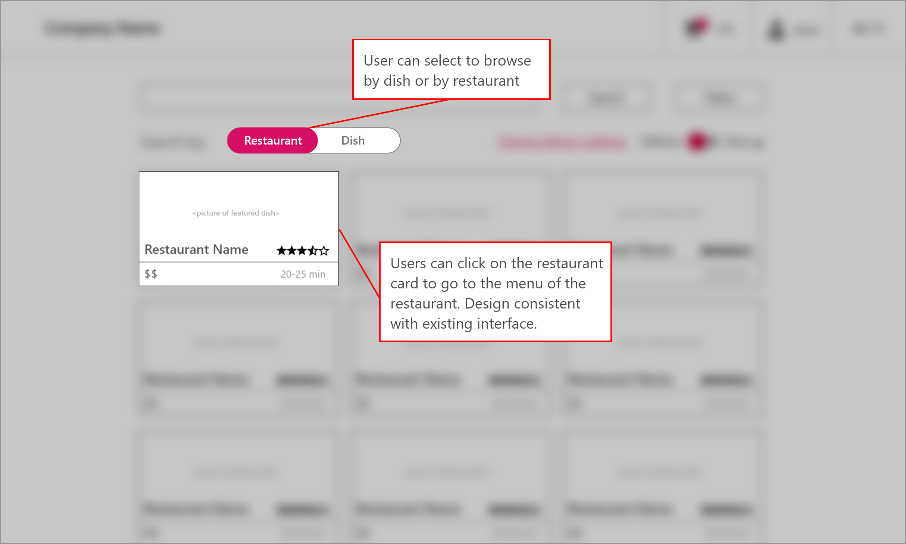
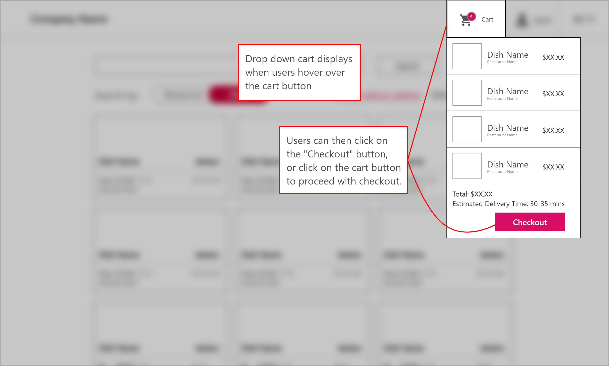
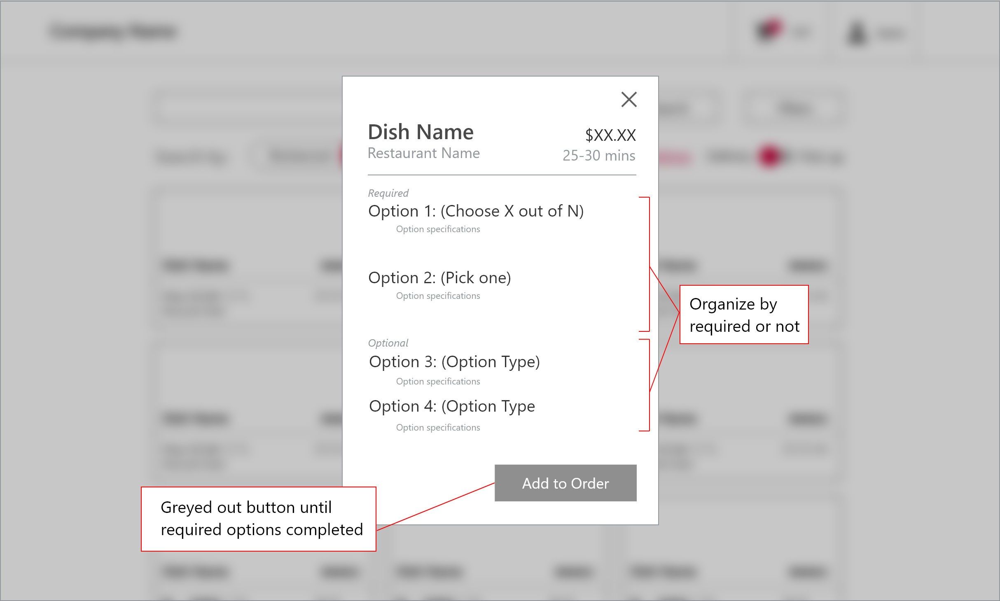

Digging deep into user research, interviews and testing to iterate on Foodora.
Research, Ideation, Visuals
Sketch, Draw.io
1 month
The prompt of this assignment was to choose a food-delivery service and redesign a major feature, using reasoning and data from user research. We asked ourselves a few questions: How can we improve the user experience of Foodora? How can we use the design process to understand and empathize with the user, identify major functionalities, and create and iterate on a low-fidelity prototype?
We designed a survey and gathered data from over 70 reddit users, to understand specifically why people use food delivery apps and their motivations at each stage. We wanted to see what the general thought process was (does dish matter more? or restaurant?) as well as any pain points in the journey.  The insights helped us define a few major use cases of Foodora that we could iterate on.
Hierarchical task analysis of the 'Food Selection' userflow
Hierarchical task analysis of the 'Restaurant Selection' userflow
We wanted to merge the two user flows into one. It seemed unintuitive that the search functionality was completely different for food and restaurant.To target the first issue, we designed an interface that allowed users to freely switch between browsing food and restaurants.
To reduce the information access cost to the checkout, we emphasized the total cost and time to delivery in the checkout hover card.
We also redesigned the foodcards so that it was obvious which items were required to complete the order and which weren't, as well as move required items to the top.
